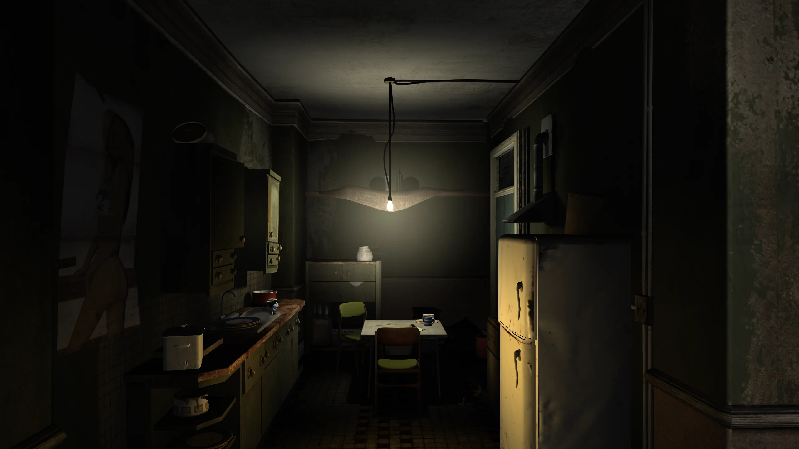
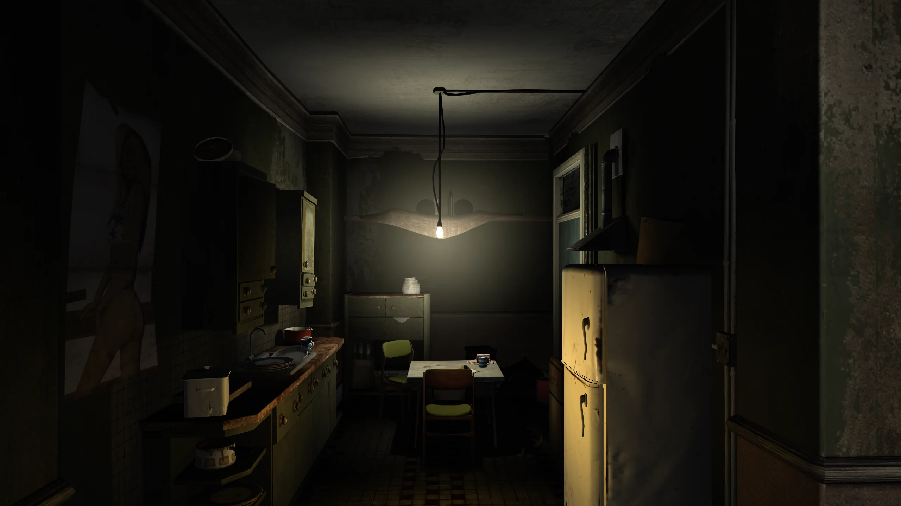

Fusion Fix
Fusion Fix for Grand Theft Auto IV: The Complete Edition is a comprehensive open-source modification that aims to fix a wide range of technical issues, bugs, and limitations in the game that were left unaddressed in official updates. This project represents a community-driven effort to restore and enhance the Grand Theft Auto IV experience for modern systems.
Z-FIGHTING
The PC port of Grand Theft Auto IV was plagued with z-fighting not seen on other platforms.
The PlayStation 3 version partially dealt with it by using a very high near clip value, while the Xbox 360 solved it by using a reversed floating point depth buffer. Fusion Fix provides a solution that yields results similar to the better approach from the Xbox 360, and effectively eliminates all z-fighting.
DEFINITION
GTA IV's PC port has an odd "Definition" option which ENABLES graphical effects when OFF, and DISABLES them when ON. One effect is a blur filter which hides this pixel pattern effect as objects fade, but it's way stronger on PC due to leftover anti-aliasing code.
Fusion Fix removes this broken anti-aliasing code and makes it so the blur filter only applies to objects as the pixel pattern effect occurs when "Definition" is on, rather than applying to the entire screen when it's off, this means Fusion Fix provides a sharper and cleaner image than seen on any other platform.
DEPTH OF FIELD
The game's depth of field effect doesn't scale correctly with resolution and it only looks correct at 720p like on consoles. Depth of field is also tied to the games "Definition" option.
We fixed the scaling by implementing an efficient bokeh blur rated up to 4K, and added an individual depth of field option separate from the "Definition" option. This allows you to not only toggle depth of field, but also control how strong it is during gameplay.
MOTION BLUR
Similar to depth of field, motion blur was tied to the "Definition" option and it had an issue where it became less intense at higher frame rates.
Fusion Fix makes motion blur the same strength regardless of frame rate. It also adds an individual motion blur option similar to depth of field, untying it from the "Definition" option. This allows users to disable motion blur completely or change how strong the effect is.
BLOOM
Bloom in the original GTA IV didn't scale correctly with resolution, meaning the effect got weaker as your resolution increased. It only looked correct at 720p.
With Fusion Fix, we've rewritten the code for bloom so it looks better and scales with resolution correctly. We've also added a new option for bloom so you can enable or disable it depending on your preference.

VOLUMETRIC LIGHTS
GTA IV had fully functional volumetric lights in the console versions, but because of a typo the occlusion effect wasn't present on the PC version.
After fixing the typo, the occlusion works perfectly. We also used this opportunity to adjust the volume transparency code to make the edges smoother.
COLOUR CORRECTION
The PC version looked very washed out compared to the consoles, as it lacked the colour curves from them.
You've probably noticed some of our Fusion Fix comparisons look better than the original game colour wise. This is because we've implemented an option called “Console Gamma” that restores the curve used in the Xbox 360 version, making the colours in Liberty City pop more just like you remembered!"

TONE MAPPING
GTA IV was developed in the early days of HDR rendering, and as such it didn't have any fancy tone mapping operators like we have today to deal with clipped highlights.
Fusion Fix adds an option to enable tone mapping to make bright highlights look less harsh.
PARTICLES
GTA IV had soft particles on console, but they were missing on PC due to the lack of a function to linearize depth in the soft particles shaders, so particles clipped through objects. Shattering glass particles also lost their colour on PC.
Fusion Fix fixes soft particles so they work again and it also fixes the broken glass particles so they keep their colour when shattering.

OBJECT FADING
The 1.0.6.0 update for PC broke several graphical effects, one of them being screen door transparency in many materials, which led to the loss of LOD fade/blending. Terrain fading was also missing on ALL PC versions.
We restored this functionality from previous versions so fading now works again, and we also restored terrain fading from the console versions of the game.
EMISSIVE LIGHTS
Another bug caused by patch 1.0.6.0 was the disappearance of several lights around the map. This was because the sign of the depth offset value was inverted for some reason, pushing them inside buildings and other meshes.
Fusion Fix restores the original sign and all the missing lights can now be seen again.
SHADOWS
Shadows were by far the most broken aspect of the game post patch 1.0.6.0. They had horrible filtering, suffered from peter panning, had their draw distance reduced, performed significantly worse than the original shadows implementation and had many other issues.
Fusion Fix completely replaces the filtering and bias code, adds support for animated tree shadows, adds contact hardening shadows and it also fixes dozens of other bugs related to shadows in general.
RAIN
Rain on PC was made almost invisible, rain streaks became shorter at higher frame rates and rain droplets on screen became pitch black and lost their refraction effect from console.
We've made rain much more visible, fixed rain streaks so they stay the same size regardless of frame rate and we've made droplets coloured again, as well as restoring the refraction effect. The fixed rain also looks fantastic when using the Xbox Rain Droplets mod!
WATER
The surface texture of water was tiled excessively so it looked noisy instead of wavy, there was a bug which caused water to look completely flat on some GPUs, and the shore foam effect was missing entirely on PC.
We not only fixed those texture bugs and restored the foam, but we also added an extra tweak that makes the edges of the water smoother, similar to what we did with the light volumes.

REFLECTIONS
Reflections were toned down significantly on PC, vehicle reflections became jagged due to g-buffers being assigned the wrong format and mirror reflections became distorted at certain camera angles.
Fusion Fix restores the stronger console reflections, swaps the g-buffers' format to the right one so vehicle reflections are no longer jagged, and it fixes mirrors so they no longer become distorted.


TREE LIGHTING
The Xbox 360 version of the game had a really nice looking translucency effect for the trees, and they were also lit differently from other objects.
Neither the PC or PlayStation 3 versions had this. Fusion Fix allows you to toggle between PC/PlayStation 3 and Xbox 360 style tree lighting, as well as a bonus mode called PC+ designed to be a middle point between the two.
DISTANT LIGHTS
GTA IV features a large number of lights in the distance for the first time in the series. However on PC these lights were broken and only became visible after 10PM when it was already dark.
Fusion Fix makes it so lights begin to turn on after 8PM and they're all visible by 10PM, the same as it was on console. We've also integrated Project 2DFX directly into the pause menu, a mod which adds much more accurate distant lights compared to the original game.
Anti-Aliasing
The game's Xbox 360 version ran at 1280x720 with 2x MSAA.
Meanwhile the PC version lacked any anti-aliasing whatsoever. Fusion Fix implements FXAA and SMAA, which are simple and performance friendly, and do an excellent job at smoothing out jagged edges, especially at high resolutions.
SUN SHAFTS
The sun in GTA IV is pretty effectless in comparison to every other 3D GTA game.
Inspired by RED DEAD REDEMPTION™, Fusion Fix adds a lovely effect that simulates light rays coming from the sun. It's fully customizable and synergizes really well with tone mapping and volumetric fog.
VOLUMETRIC FOG
The game uses a very simple linear piecewise fog shader, but since it isn't radial it moves with the camera, and it doesn't do the best job at hiding the edges of the world.
To touch up that aspect of the game, we implemented an optional radial height based exponential fog shader, which also adjusts its colours dynamically to match the sky and blend the horizon in every situation.
CUTSCENES
Cutscenes in GTA IV break at frame rates higher than 30. The camera field of view can become too high or too low, and the characters and camera will judder significantly even with a stable frame rate.
Fusion Fix fixes these issues so the camera field of view is always at its intended level, and the judder from characters and the camera will no longer happen.
VEHICLE LIGHTS
The lights of all vehicles introduced in The Ballad of Gay Tony were corrupted when they were ported to PC, including iconic cars like the second generation Schafter, Bullet GT, and Super Diamond.
Fusion Fix restores the proper light colours, ensuring that TBOGT vehicles have the same high-quality lighting as the original game's cars, with accurate red taillights, amber turn signals, and properly coloured headlight beams.
TURN INDICATORS
There's now a new option with Fusion Fix to make Niko use turn indicators automatically when taking a turn, maybe he finally got his license. Flying through the windshield of a vehicle will also now cause the hazard lights to be activated.
EXTENDED CONTROLLER SUPPORT
The PC version has support for Xbox 360 gamepad icons, but that's it.
Our artists have created brand new gamepad icons for several different systems and controllers, including DualSense, Steam Deck and even Nintendo Switch!
IMPROVED MOUSE CONTROLS
GTA IV's mouse input breaks at frame rates higher than 30 and overall doesn't feel as smooth as it should.
We've implemented a raw input option which provides precise 1:1 mouse movement throughout the game. Technically speaking, the actual implementation is not raw input, but the name was chosen for simplicity, since functionally it behaves in a similar manner.
CENTERING DELAY
The original game's camera almost immediately begins to return to the center of the screen once you move it anywhere from the center. This is frustrating and it feels like you're fighting the camera most of the time.
With Fusion Fix, there's now a new slider in the pause menu that allow you to extend the delay before the camera starts to return to the center of the screen. This slider can even be individually configured for controller usage.
COVER CENTERING
When coming to a corner in GTA IV while in cover, your camera control gets locked for a couple of seconds before you can move it freely.
Fusion Fix removes this restriction and you can now aim immediately once you reach a corner while in cover.
CENTERED CAMERA
GTA IV's default camera is offset to the left of the player while on-foot and in vehicles.
We've added new options to center the camera either on-foot, in vehicles, or both!
IMPROVED SNIPER CONTROLS
GTA IV locks the players movement while aiming down sights with a sniper. Snipers also can't be aimed in third-person.
Fusion Fix improves this by allowing movement while using the scope and it also allows you to aim with a sniper without using the scope as well if you wish.
ALWAYS RUN
Walking is the default movement in GTA IV, to jog/run you need to hold/tap the sprint key.
We've added an always run option which makes the default movement a jog rather than a walk, similar to classic GTA titles. You can still walk by pressing the ALT key.
CAMERA SHAKE
In GTA IV, the camera is meant to shake as you move, but this effect becomes significantly weaker above 30FPS.
Fusion Fix makes the effect work regardless of frame rate and it also adds an option to disable the effect entirely for those who don't like it.
IMPROVED LOADING TIMES
GTA IV on PC has an unskippable intro and it takes you to a main menu first instead of just loading your last save immediately like console.
Fusion Fix adds a skip intro and skip menu option in the GAME menu, as well as improving overall load times. This significantly reduces how long it takes to get in-game.
SEASONAL EVENTS
Fusion Fix adds seasonal events to the game which includes snow at winter and a scarier atmosphere at Halloween. The snow effect is done almost entirely using shaders instead of replacing map textures, similar to GTA Online's yearly snow event. Players can toggle this feature in the GAME menu.
Want to experience these without waiting? Then keep an eye out for the phone numbers to call!


 



{kind=link}
{kind=link}
{kind=link}